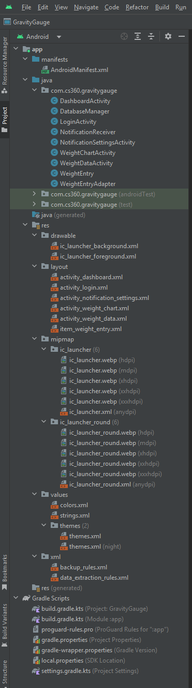

This enhancement focuses on improving the software design structure of my Android Studio project, GravityGauge. The goal was to improve modularity, maintainability, and adherence to best practices in software design.
Below is the current structure of the project, showing the improved organization of activities, database management, and layout resources:
The improved structure separates concerns effectively, making the codebase more scalable and easier to maintain.
Previously, the project had issues such as:
To improve the project’s structure, I implemented the following changes:
Below is a comparison of how the database interaction was previously handled vs. how it’s managed now:
public class MainActivity extends AppCompatActivity {
private SQLiteDatabase db;
private Button btn;
@Override
protected void onCreate(Bundle savedInstanceState) {
super.onCreate(savedInstanceState);
setContentView(R.layout.activity_main);
db = openOrCreateDatabase("GravityGaugeDB", MODE_PRIVATE, null);
btn = findViewById(R.id.button);
btn.setOnClickListener(view -> {
db.execSQL("INSERT INTO weight_entries (weight) VALUES (180)");
});
}
}
public class DatabaseManager {
private SQLiteDatabase db;
public DatabaseManager(Context context) {
db = context.openOrCreateDatabase("GravityGaugeDB", Context.MODE_PRIVATE, null);
}
public void insertWeightEntry(int weight) {
db.execSQL("INSERT INTO weight_entries (weight) VALUES (" + weight + ")");
}
}
public class MainActivity extends AppCompatActivity {
private DatabaseManager dbManager;
private Button btn;
@Override
protected void onCreate(Bundle savedInstanceState) {
super.onCreate(savedInstanceState);
setContentView(R.layout.activity_main);
dbManager = new DatabaseManager(this);
btn = findViewById(R.id.button);
btn.setOnClickListener(view -> dbManager.insertWeightEntry(180));
}
}
By restructuring the project, I significantly improved:
These enhancements bring modularity, organization, and efficiency to the GravityGauge project. By following best practices in software design, the project is now better suited for future development.